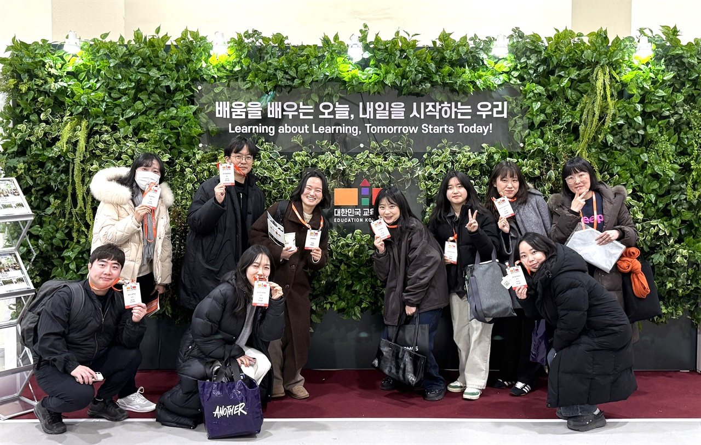

주요 관심 분야
융합수업 · 센서와 태블릿으로 데이터를 모으고, 과학과 사회 문제를 잇는 탐구수업을 설계합니다.
교수·학습 개선 · 학생 참여형 탐구와 토의, 평가 방법을 연구하고 공개수업에서 피드백을 나눕니다.
소통과 협력 · 지역을 돌며 만나고, 신규·복직·경력 교사가 서로의 수업을 돕습니다.

충남융합과학연구회는 더 나은 과학 수업을 위해
함께 배우고 실천하는 충남 과학교사들의 모임입니다.
탐구·융합 수업부터 AI·디지털 도구 활용까지, 교실에서 시작된 고민을 나누고 수업의 아이디어를 함께 발전시킵니다. 운영 계획서와 탐구활동 자료, 과학 행사 노하우를 공유하며 학교 현장의 준비를 돕습니다. 배움과 나눔을 통해 교사의 성장을 돕고, 학생과 지역사회에 과학의 즐거움을 전합니다.
한 사람의 열 걸음보다, 스무 사람의 한 걸음.
서로의 마음과 시간을 존중하며, 함께 성장합니다.
융합수업 · 센서와 태블릿으로 데이터를 모으고, 과학과 사회 문제를 잇는 탐구수업을 설계합니다.
교수·학습 개선 · 학생 참여형 탐구와 토의, 평가 방법을 연구하고 공개수업에서 피드백을 나눕니다.
소통과 협력 · 지역을 돌며 만나고, 신규·복직·경력 교사가 서로의 수업을 돕습니다.
월 1회 정기 모임 · 충남 각 지역을 순회하며 회원 가까이에서 만납니다.
공동 연구 · 수업 자료와 실험 결과, 회의 기록을 정리해 온라인으로 공유합니다.
온라인 소통 · 모임 사이에도 채팅과 비대면 회의로 질문과 의견을 나눕니다.
배우고, 나누고, 웃었던 우리의 기록.
사진을 누르면 확대 사진이나 활동 기록을 볼 수 있어요. 우리의 기록은 계속 이어집니다.
관심사를 따라 모인 연구회원들의 실천이 각자의 교실로 이어집니다.
상상이룸 교사학습공동체
2026 상상이룸 교사학습공동체 선정
충남대학교 협력사업
AI·디지털 기반 교육혁신 관련 연구 수행 및 현장 적용
학생과 함께하는 융합 탐구
연구회원 소속 10개교에서 운영
권역별 전문적 학습공동체
앱스 스크립트(Apps Script)를 활용한 과학 교수·학습자료 제작
수업의 고민도, 새로운 아이디어도 좋습니다.
함께 배우는 즐거움을 나눠요.